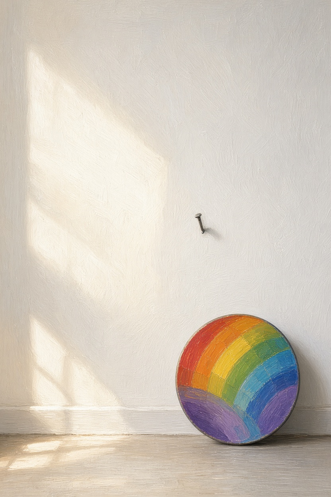

19 / 27 · THE AFTER
Read first. Then draw. The nail went into the wall the same morning, and the disc leaned under it, because the plainest joy on the wire gets the first nail. The warnings have other rooms.

Read first. Then draw. The nail went into the wall the same morning, and the disc leaned under it, because the plainest joy on the wire gets the first nail. The warnings have other rooms.